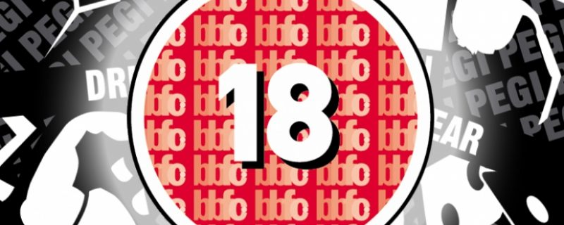
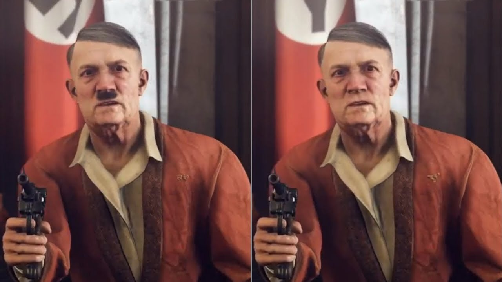
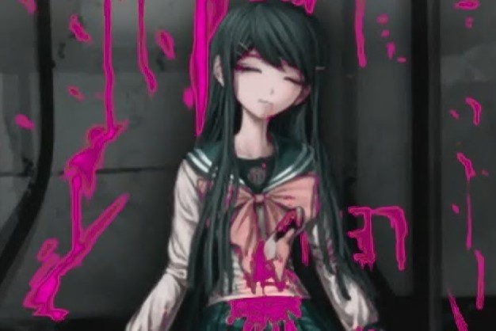

Wiki page on the meaning of the term "Video game censorship"
Video Game Censorship
What is video game censorship?
Video game censorship are efforts by an authority to limit access, censor content, or regulate video games or specific video games due to the nature of their content.
Censorship’s purpose is essentially to adapt games to the moral, social and cultural norms of the estimated market.
Censorship in other countries:
- Germany
Germany is well-known among gamers as a strict censor. Amid absolute ban of Nazi and all Nazi-related themes, imagery and symbols in both games and promotional materials, country also is notorious with decreasing or completely removing violence in all forms. Games that are sold in German market have no “killing points” or any form of “killing spree” modes. But as demanding as it gets in terms of sensitive censorship, Germany is still one of the most desired markets in gaming industry and the biggest one in Europe.
- Japan
Japanese censors’ main focus is reducing, removing or heavily modifying all content and imagery, related to sexual intercourse and nudity. Violence censorship in Japan is much more strict than in the USA, when Japanese censors are known for demands to “pixelate” or completely remove nudity, genitals, body deformations, blood and self-harm in any form in order to protect the citizens “morality”.
- USA
USA censors, although more “tolerant” to violence than Germany, require to tone down sexually suggestive imagery down a notch by cosmetic changes. If Japanese fans of anime and periodicals like manga can appreciate cat-maids in revealing outfits, Americans are left to be satisfied with repainted skins that show less of actual skin of characters.
To illustrate censorship in action, here are a few famous cases:
-
Fallout 3
(2008, Bethesda Softworks)
The series of Fallout games are known for their “nuclear” imagery, so it is no wonder why they underwent censorship changes. Due to the tragic events of May 1945 during the last days of the World War II, Japan is sensitive to topics of nuclear
weapons, so the infamous scene of blowing up whole town by detonating a nuclear bomb was removed in the Japanese release of the Fallout 3.
-
Wolfenstein 2: The New Colossus
(2017, Bethesda Softworks)

As a most noticeable, famous and final entry, Wolfenstein’s heavily censored cut-scenes and in-game content was greatly discussed. Instead of assassinating Adolf Hitler himself, German players were finishing the leader of the “regime” with
a character model without easily recognizable mustache.
-
Danganronpa
(series, 2010-2019, Spike Chunsoft)

Trigger Happy Havok, Goodbye Dispair and final Killing Harmony all feature “trademark” pink blood. This is a case of a game with self-censored image to appeal to the Japanese censors and remain available to 15+, rather than 18+. Through smart
advertising, the games have immense popularity among gamers around the world, so much so, that pink blood became associated only with the Danganronpa series.
Although most censorship rules and cases are understandable, more and more “hardcore” gamers speak against ruining “authenticity”, originality, intended message of the games that have to change due to the requirements of censors. Some cases
of censorship are known to the public mostly because of how ridiculous the changes and/or criteria were, that showcases the impact of censorship on gaming industry.